I'm a robotics engineer and technical leader in Austin, TX. As Team Lead, Application Engineering at Apptronik, I own the technical path of humanoid deployments — from understanding the customer's problem to a validated system doing productive work on their floor, for customers like Mercedes-Benz, GXO and John Deere.
I came to this through two earlier stages. First, research on robot path planning at Oregon State University: planning for multi-robot exploration when the robots can barely communicate, and planning for an underwater vehicle inspecting subsea structures. Then, in industry, fleet management software — the layer that coordinates several robots on one customer site and connects them to the customer's own plant systems. This page sets out that technical work, starting with the research.
The research question.How do multiple robots coordinate to maximize the area explored — in oceans, caves, and on other planets — when they cannot rely on continuous communication? Coordination schemes that assume a shared map or a central planner fail exactly where these robots are most needed.
The approach. Decentralized exploration in which coordination is implicit rather than communicated. A convolutional neural network is trained by imitation learning to act as a heuristic for Monte Carlo Tree Search, so each robot plans its own actions while behaving in a way that is consistent with what its teammates are likely to do — without needing to talk to them.
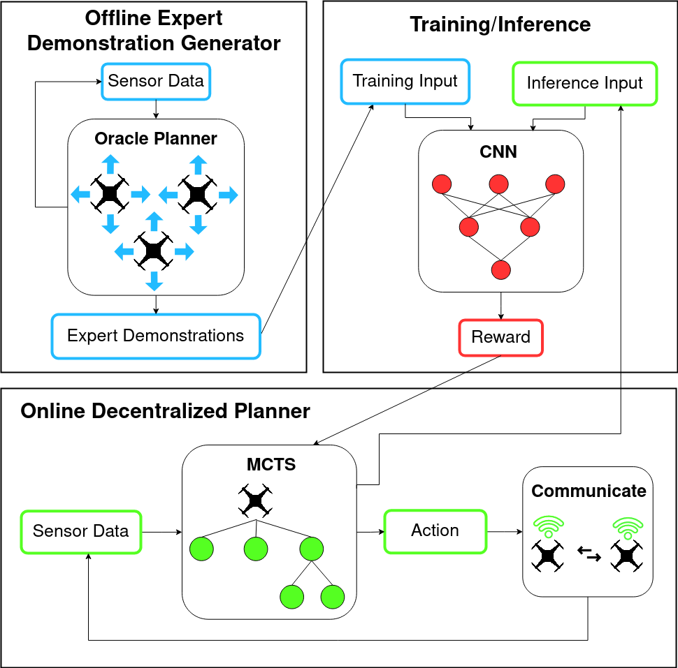
FIG. 1.1The three components: an offline oracle planner with ground-truth information generates expert demonstrations; a CNN learns to assign rewards by imitating them; MCTS uses the trained CNN as its reward function for online, decentralized planning. Figure from the thesis (Fig. 1.3).
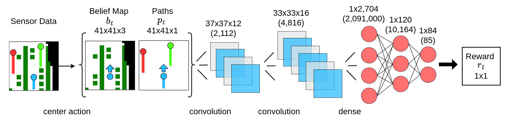
FIG. 1.2The CNN architecture: belief map and traversed path in, scalar reward out. Figure from the thesis (Fig. 3.3).
Two challenges, two contributions:
Challenge
My contribution
The locations of the points of interest are unknown
A heuristic reward function learned from similar environments
A robot cannot observe what the other robots have seen
A coordination model learned from expert demonstration data
The test environments. Two grid maps: a 21×21 forest, and a 41×41 map modelled on the marina at Depoe Bay Harbor, Lincoln County, Oregon — the task there being to locate and inspect boats for possible damage. Points of interest spawn at random locations on every trial, so the planner never sees the same map twice.
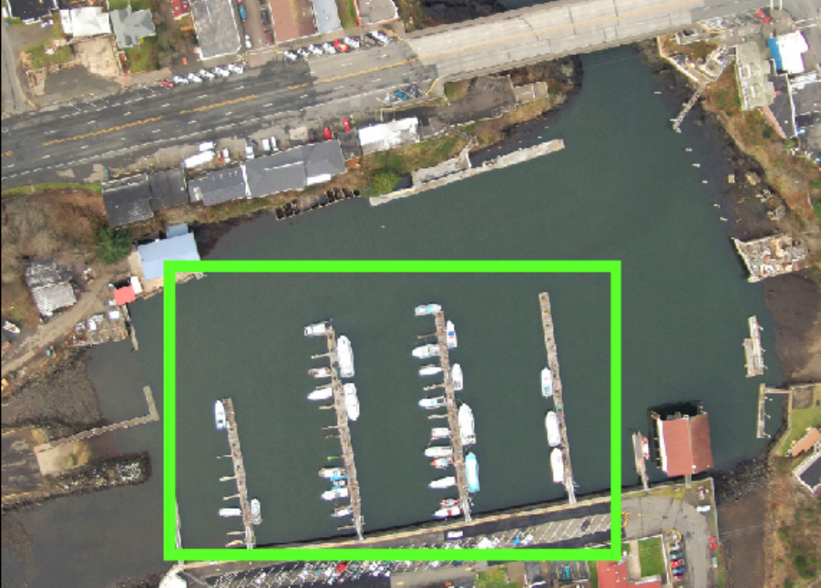
FIG. 1.3The real harbour behind the map: the green outline is the area modelled in simulation. Thesis Fig. 3.5.
Results — 100 trials per map:
Outperformed every baseline planner on the forest map at all communication levels — and at partial and poor communication, by a significant margin.
80% faster than the same planner using the CNN as its rollout policy, at equivalent solution quality. The learned reward function is what makes a cheap random rollout policy viable inside MCTS — this is the practical payoff of the method.
Degraded gracefully as communication dropped from every step, to every 10th step, to every 20th.
Scaled from 4 robots to 16 without retraining, and when trained on demonstrations from teams of up to 14 robots, outperformed all baselines.
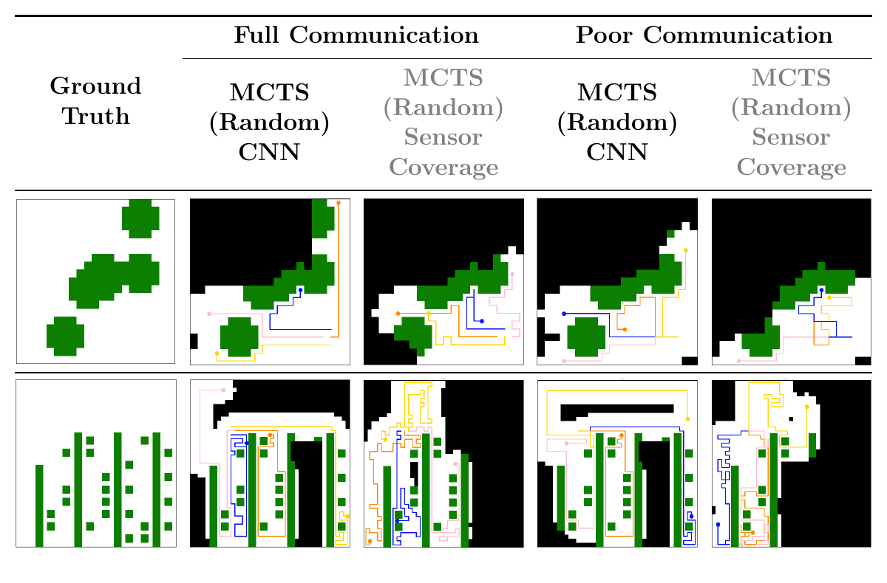
FIG. 1.4What the difference looks like on the map. Paths of a team of 4 robots — white is free space, black is unknown, green are the points of interest to be observed. Left column is ground truth; then the proposed method and the sensor-coverage baseline, each at full and poor communication. Top row forest, bottom row Depoe Bay. The proposed method keeps finding green cells when communication breaks down, because each robot has learned where its teammates are likely to go. Thesis Fig. 3.9.
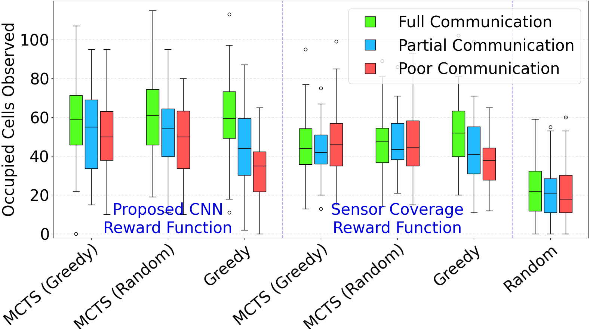
FIG. 1.5Forest map, 4 robots, 100 trials. The three left groups use the proposed CNN reward function, the rest are baselines; colours are full, partial and poor communication. The method wins at every communication level, and the gap widens as communication degrades. Thesis Fig. 3.8a.
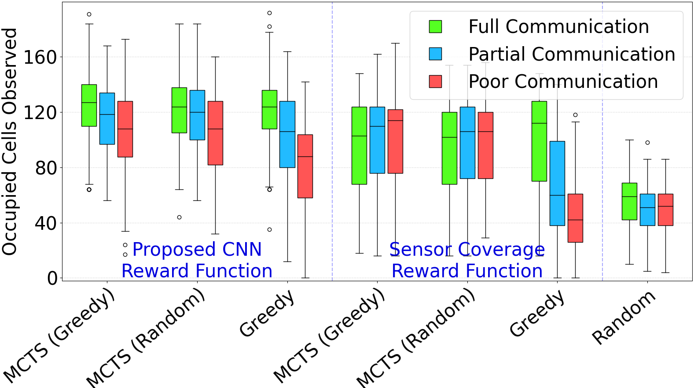
FIG. 1.6The same comparison on the larger Depoe Bay map. Thesis Fig. 3.8b.
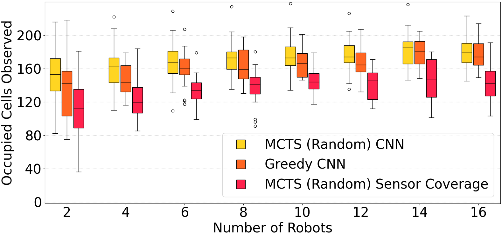
FIG. 1.7Scaling under poor communication, with the CNN trained on just 4 robots: the method keeps its lead over the sensor-coverage baseline all the way to 16 robots — no retraining. Thesis Fig. 3.10.
Baselines: sensor-coverage heuristic planners (greedy and MCTS variants), greedy one-step lookahead, and random. Metric: occupied vertices (points of interest) observed by at least one robot. Funding: NSF IIS-2103817, ONR N00014-22-1-2114.
Read more — method and why it matters
Why imitation learning. MCTS with a strong heuristic can plan well, but a hand-designed heuristic for multi-robot exploration is hard to write and expensive to evaluate. I trained the CNN by imitating a centralized oracle planner with perfect information — a planner the robots cannot query at decision time — so the learned model predicts what the oracle would have said. The result is a heuristic that is cheap to evaluate at run time and captures coordination behaviour that is difficult to state as a rule.
A failure mode I found and fixed. Midway through the work I identified a subtle problem: the belief map fed to the learned model goes stale during MCTS's simulated lookahead, because the robot is not actually moving during simulation — so the model was being queried on inputs unlike anything in its training distribution. I solved it by augmenting the training set with synthetic rollout datapoints, which avoided having to learn an expensive separate model of belief-map dynamics.
Why implicit coordination. If each robot's policy is learned from the same demonstration distribution, the robots' choices are correlated even with no messages exchanged — they divide the space sensibly because they have each learned what a sensible division looks like. Communication, when it happens, becomes a bonus rather than a requirement.
Why this transfers to my later work. The thesis is about making a multi-robot system behave coherently under real-world constraints instead of ideal ones. Fleet management for humanoids on a plant floor is the same class of problem with different constraints: heterogeneous tasks, hard safety limits, and a customer control system as an additional actor.
Implementation. A CNN with 2.09 M trainable parameters — two 5×5 convolutional layers and three fully-connected layers, outputting a scalar reward — taking a 41×41×4 input tensor (belief map plus traversed path). Trained in PyTorch with Adam (lr 0.001) on 150,000 samples per map, about half of them synthetic rollout data, in roughly five minutes per map. MCTS ran with a 1000-vertex tree limit, a rollout budget of 6, and a UCB exploration constant of 1.0.
02 Graduate Research Assistant — Marine Autonomy Center / RDML, OSU
AUV path planning for autonomous inspection of marine energy infrastructure
Brian Polagye (University of Washington) · Aaron Marburg (UW-APL) · Geoff Hollinger (OSU)
Project goal
3D reconstruction of underwater turbines
My part
Viewpoint optimization and local path planning
FIG. 2.1The RAVEN unmanned underwater vehicle, designed for autonomous inspection of subsea marine energy infrastructure. Image credit: UW-APL, via the OSU Marine Autonomy Center.
How the system works
Sonar + odometry
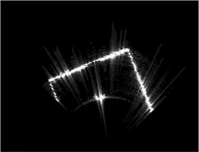
(x, y, z, yaw)
→
Mapping
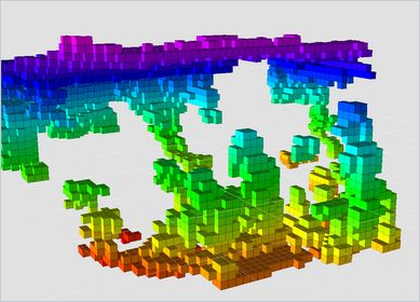
octree
→
Viewpoint generation + selection
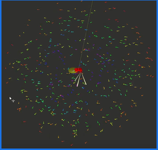
optimized
→
Planning
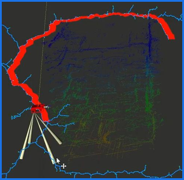
RRT-Connect
→
Control
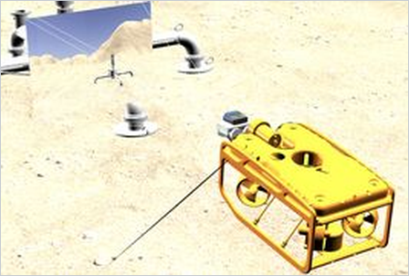
FIG. 2.2The inspection pipeline. Sonar and odometry produce the vehicle state (x, y, z, yaw); an octree map is built from it; viewpoints are generated and selected; the planner finds a collision-free path to the chosen viewpoint; control executes it. The two stages in blue are the ones I built.
My contribution:
Helped build the local motion planner for the inspection pipeline.
Implemented the planner with RRT-Connect, using the OMPL library.
Helped build the collision map: an octree-based state validity checker that rejects viewpoints too close to occupied space and updates viewpoint cost accordingly.
Optimized viewpoint generation and selection for the inspection task.
Implemented the sonar nodder, which interpolates ROS time to sonar tilt angle to sweep the sensor and return the highest-reward viewpoint.
Built the planner visualization tooling.
Delivered a working end-to-end path planning pipeline, developed in simulation and tested on hardware, working remotely in a team of 8 across two institutions.
Some of the features I implemented
Before optimization
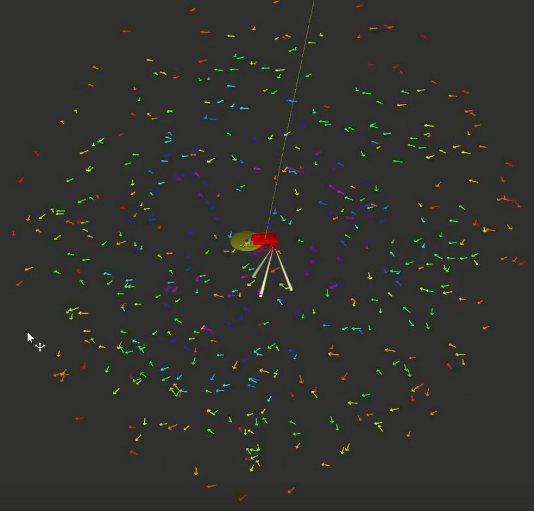
→
After optimization
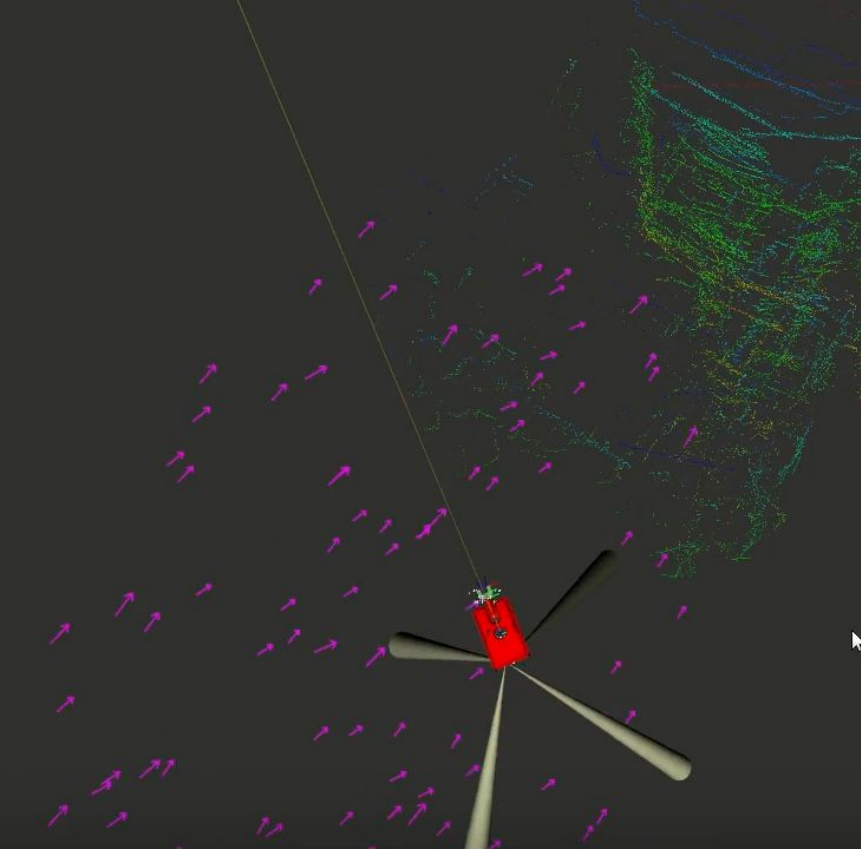
FIG. 2.3Viewpoint generation, before and after optimization. Left: the unoptimized candidate set — hundreds of viewpoints in every direction, most of them looking at nothing. Right: after optimization — a sparse set, oriented towards the structure actually being inspected. Choosing where to look from is half the inspection problem, and this is what made the planner tractable.
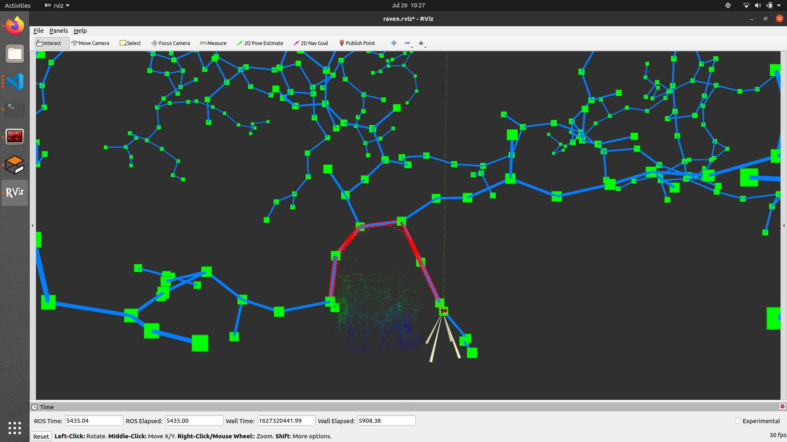
FIG. 2.4The planner, and the visualization I built to debug it, in RViz: the RRT-Connect tree (green nodes, blue edges), the selected path in red, and the sonar point cloud of the structure being inspected.FIG. 2.5The planner running in simulation: the sonar sweeps the structure, the map fills in, viewpoints are generated and scored, and RRT-Connect plans the vehicle's way to the next one.
From simulation to open water
Simulation — Gazebo
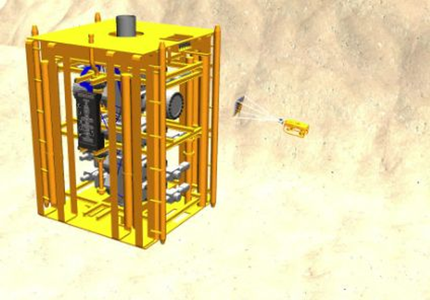
→
Test tank
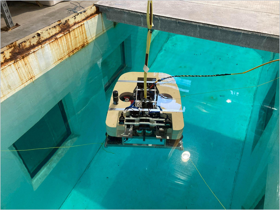
→
Open water — night operation
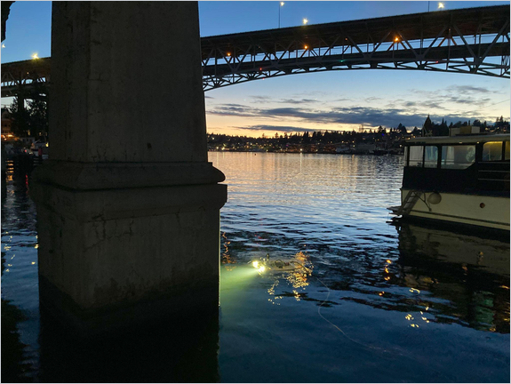
FIG. 2.6The subsea structure simulated in Gazebo, the vehicle in the test tank, and the same system operating at night under a bridge.Read more — planning stack and results
Why this problem is hard. Marine hydrokinetic converters sit offshore in strong tides and currents, which makes inspection by divers expensive and dangerous. Automating the inspection means a vehicle has to decide, on its own, where to position itself to see the structure — and get there without hitting it.
Where my work sat in the stack. The pipeline separates where to go from how to get there: a global layer decides which viewpoints to visit across the inspection task, and the local planner gets the vehicle there without collision. I helped build the local planner (RRT / RRT-Connect via OMPL) — the layer that has to respect the vehicle's real constraints and the geometry of the structure being inspected.
Collision checking. Validity checking ran against an octree collision map. Rather than a naive occupancy test, the check exempted states within 50 cm of the goal, then counted occupied cells in a cube sized to the tree resolution around the candidate state and rejected the state above an occupancy threshold. This is what turned raw viewpoints into viewpoints with a usable cost.
Viewpoint generation. For an inspection task, planning is only half the problem — you also have to choose where to look from. Optimizing viewpoint generation reduced wasted motion and improved coverage of the inspection target.
Sonar nodding. The sonar was swept by interpolating ROS time to tilt angle, with the sweep limits and frequency configured in YAML, returning the viewpoint with the highest reward. This is what gave the mapping layer the geometry it needed.
Visualization. Planner behaviour in 3D is close to impossible to debug from logs. I built the visualization that made planner decisions inspectable — which is what made iteration on the planner practical.
Remote engineering practice. The team of 8 worked across OSU and UW-APL: documented interfaces (README, pseudocode), three syncs per week, pair programming, and code review before every merge.
Stack. C++ and Python on ROS · RViz for visualization and debugging · Gazebo for simulation · OMPL for the sampling-based planner · Greensea for vehicle control · octree-based collision mapping · YAML-configured sonar sweep.
Part II — Industry
03 Team Lead, Application Engineering — Apptronik
Humanoid deployment architecture for Fortune 500 manufacturing and logistics
Role
Team Lead, Application Engineering
Platform
Apollo and Apollo 2 humanoid robots
My team
4 engineers, growing to 6
Customers
Mercedes-Benz · GXO · John Deere — our publicly announced customers
Owner of the safety concept for the humanoid work cell (see 3b)
Apollo 2
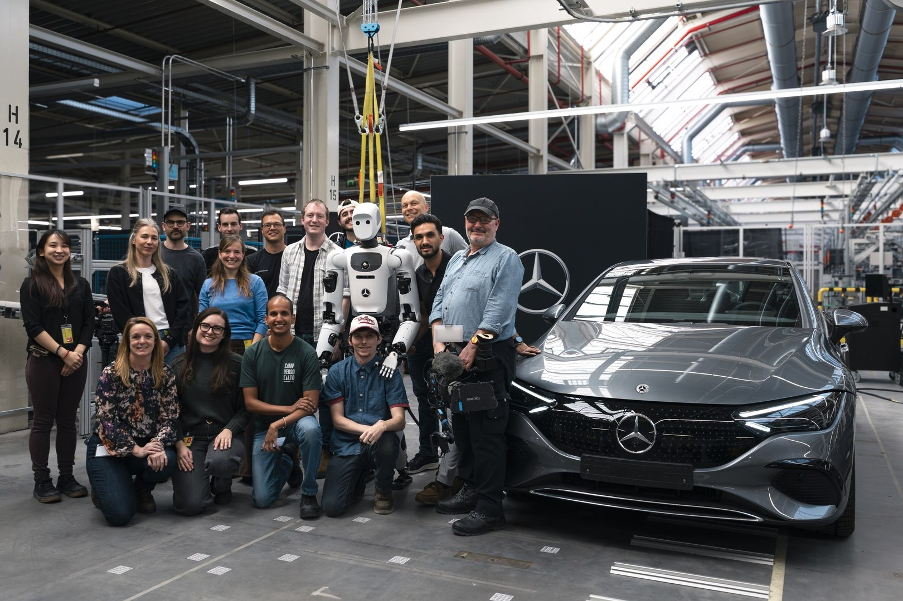
Apollo 1
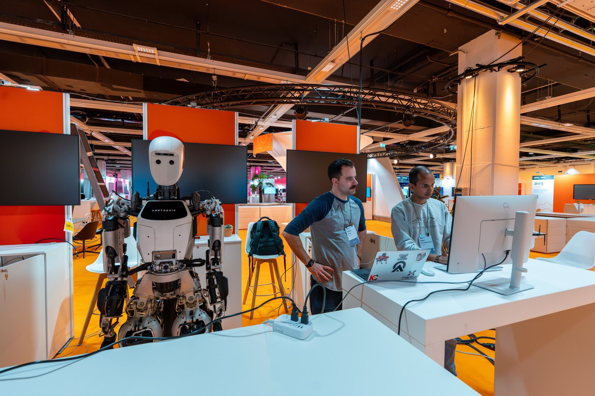
FIG. 3.1Left: Apollo 2 with the project team at a Mercedes-Benz plant, 2026 — working on a real customer production manufacturing use case. Right: Apollo 1 at the BCG EDGE Conference 2024 in Vienna, Austria — bringing the robot up on site (I'm on the right).
As technical lead for application engineering, I own the path from customer problem to validated deployment for Apptronik's humanoid platform, across both Apollo generations. I lead a team of 4 engineers (growing to 6) and act as the single technical point of coordination for every customer account.
What that means concretely:
Understand the customer problem. Translate a plant-floor process into robot requirements — cycle time, reach, payload, part presentation, safety boundaries, throughput targets.
Architect the solution. Define every technical building block a deployment needs — robot configuration, end effector, perception, fixturing, work cell layout, IT/network, and integration into customer systems.
Plan, then integrate. Sequence the work across internal teams, then bring the pieces together into one working system rather than a collection of parts.
Validate on site. Own technical validation at the customer facility: commissioning, acceptance criteria, iteration against real production conditions.
Customers: Fortune 500 accounts, our publicly announced ones being Mercedes-Benz, GXO and John Deere. I coordinate across all of them.
Read more — scope, method, and outcomes
Why this role exists. A humanoid is not a product you drop into a factory. Each deployment is a systems-integration problem where the robot is one component among many: the customer's process, their safety infrastructure, their IT landscape, and their operators. Somebody has to hold the whole picture. That is the role.
Working method
Discovery — on-site process observation and requirements capture with the customer's engineering and operations teams.
Feasibility — assess whether the task is within platform capability today; identify what must be developed versus configured.
Architecture — a deployment architecture covering robot, cell, perception, integration interfaces, and safety.
Build & integrate — coordinate internal engineering (controls, autonomy, hardware, safety) against the architecture.
Validation — technical validation at the customer site against agreed acceptance criteria.
Feedback loop — feed deployment learnings back into platform requirements for the next generation.
Team leadership. Technical lead for a team of 4 engineers, scaling to 6. Responsibilities include work allocation across parallel customer programs, technical review, and being the escalation point for deployment-blocking issues.
Both generations. I worked on Apollo 1 and on Apollo 2, which gives me a view of how deployment requirements from the field shaped the next-generation platform.
03b Functional Safety ownership
I am the owner of the safety concept for the humanoid work cell, and a certified Functional Safety Engineer (TÜV Rheinland).
Define the safety concept for a work cell in which a mobile humanoid operates in the vicinity of people.
Bring that concept into a form customers' own safety organizations can review and accept — a prerequisite for deployment at automotive and logistics sites.
Bridge robot-side safety architecture and the customer's existing plant safety infrastructure.
Certification
Certificate
FS Eng (TÜV Rheinland) — Functional Safety Engineer
Application area
Machinery
ID no.
33409 / 26
Issued / valid until
May 2025 — May 2030
Issued by
TÜV Rheinland Industrie Service GmbH, Functional Safety & Cybersecurity, Cologne (course provider: TÜV Rheinland of North America)
Standards covered
EN ISO 13849-1 · EN ISO 13849-2 (validation) · EN 62061
Standards committee
I am a member of the committee writing the new international safety standard for dynamically stable robots.
Committee
ISO/TC 299/WG 12
Scope
"Safety of dynamically stable industrial mobile robots (legged, wheeled, or other forms of locomotion)"
Convenorship
ANSI
There is no established safety standard yet for a machine that stays upright by actively balancing — the existing ones assume a robot that is stable when switched off. I contribute deployment experience to the drafting: what actually has to be argued, measured and accepted on a customer site before a balancing robot is allowed to work near people.
Read more — why humanoid work-cell safety is a distinct problem
Industrial safety standards were written for fixed industrial robots and, more recently, for collaborative arms. A legged humanoid working in a human-designed space fits neither model cleanly: it is mobile, it has a large and changing workspace, and its failure modes include loss of balance.
The safety concept therefore has to reason about the whole cell rather than only the robot: layout and perimeter, detection zones, the robot's behaviour when a person is detected, stop categories and their reaction paths, and residual risk that must be handled by cell design rather than by the robot.
The TÜV Rheinland Functional Safety Engineer certification — risk assessment, safety functions for machines, and validation under EN ISO 13849-1/-2 and EN 62061 — is what lets me carry that argument with customer safety authorities in a language they already accept.
04 Application Engineer — Agility Robotics
Fleet management software and plant safety integration for multi-robot deployments
World's first commercial multi-robot humanoid deployment — Amazon, 2023 — and deployments at Toyota
Digit v2
Digit v3
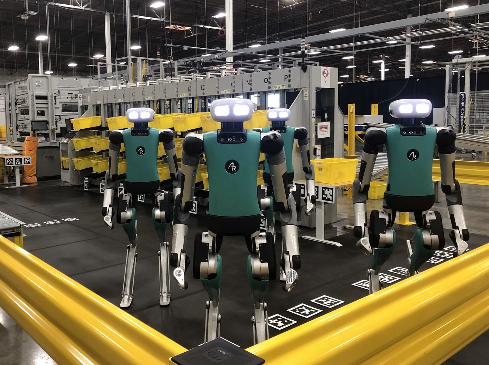
FIG. 4.1Left (Digit v2): carrying a box — the pre-production version of the robot. I implemented a range of use cases on Digit v2 through its SDK — this was before imitation learning, so everything ran on classical control with fiducial markers. Photo: Agility Robotics, via The Robot Report. Right (Digit v3): the world's first commercial multi-robot humanoid deployment — four Digits in one work cell at Amazon, 2023. This is the installation my fleet management software was built to coordinate.
FIG. 4.2The world's first commercial deployment for humanoids — try and spot me.
I worked on Digit V2 and V3 and was responsible for the most important piece of software on the deployment side: the fleet management system. It ran the world's first commercial multi-robot humanoid deployment — several Digits working in one cell at Amazon in 2023.
Fleet management software — what it does:
Coordinates multiple robots working in the same facility.
Assigns and dispatches tasks across the fleet.
Collects and analyses operational data from the robots.
Integrates with customer systems — warehouse/plant IT and the customer's own control layer.
Interfaces with the safety system of the installation.
I was the lead for the integration between the customer's PLC system and our fleet manager — the interface that lets a customer's existing plant control and safety layer and a fleet of humanoids operate as one system, so that people are not injured, robots are not damaged, and equipment is not destroyed. This work delivered Agility's first PLC-based safety integration under ISO 10218 / ANSI-RIA.
Read more — the integration problem
Why fleet management is the hard part. A single robot doing a single task is a demo. A facility running several robots continuously needs task allocation, state tracking, error recovery, data collection, and a defined relationship to everything else on the floor. That layer is what turns a robot into an installation.
PLC integration. Plant floors are run by PLCs, and they are the system of record for what is happening in a cell — including the safety system. Connecting a fleet manager to a customer PLC means agreeing on a signal interface and its semantics, handling handshakes and interlocks, respecting the timing and determinism expectations of the plant side, and making failure behaviour explicit on both sides.
Why this interface is the one that matters. The stakes here are not throughput. They are that nobody gets hurt and nothing gets broken: people working near the robots must not be injured, the robots themselves must not be damaged, and the equipment and product around them must not be destroyed. My work is what allows the customer's existing safety system and our fleet manager to coordinate in order to guarantee exactly that — the fleet respects the plant's safety layer (stop, slow down, stay out of a zone), and the plant sees what the fleet is doing. Getting this interface wrong does not produce a bug; it produces an injury, a destroyed robot, or a stopped line.
Data. Beyond dispatching work, the fleet manager was the point where operational data was gathered and analysed, which is what makes performance measurable and problems diagnosable after the fact rather than only live on site.
05 Skills summary
Learning & autonomy
Deep imitation learning · CNN-based planning heuristics · Monte Carlo Tree Search · decentralized multi-robot coordination under communication constraints
Motion planning
Sampling-based motion planning (RRT, RRT-Connect, OMPL) · local planner implementation · octree collision checking · viewpoint generation and optimization · sonar sweep control · 3D planner visualization · simulation-to-hardware validation
Systems & deployment
Solution architecture for robot deployments · requirements engineering from customer processes · work cell design · on-site commissioning and technical validation · technical team leadership (4 → 6 engineers) · Fortune 500 customer coordination
Software
Multi-robot fleet management · task allocation and dispatch · operational data collection and analysis · PLC ↔ fleet manager integration
Safety
Functional Safety Engineer (TÜV Rheinland), Machinery · EN ISO 13849-1/-2 · EN 62061 · risk assessment · safety concept ownership for humanoid work cells · integration with customer plant safety systems · committee member, ISO/TC 299/WG 12 (safety of dynamically stable industrial mobile robots)